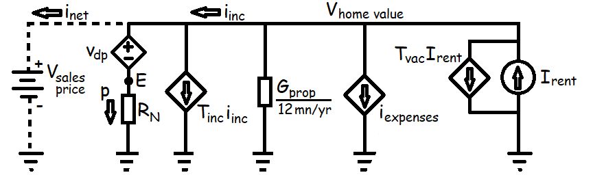

Price Floor (c = 1) Model
The mortgage calculator demonstrated an important result: there is a constant, denoted RN, which relates monthly mortgage payments to inital loan principal and depends only on a geometric series of the interest rate (i) and loan term (N) — most importantly RN is a constant, independent of loan size.
This constant is like , where current (I) is akin to monthly mortgage payments and voltage (E or V) is akin to loan principal. We define variables p to be the monthly mortgage payment and E0 the initial loan principal such that:
This Ohm's law relationship inspires creation of a circuit model for home prices based on monthly cash-flows.
The analysis of property prices begins with estimating the rent the property could fetch and the sum of all operating expenses a landlord would face based on current market prices. These two values are projected to grow proportionally in the future with inflation, so expenses are depicted as a dependent current source (diamond shape) to keep rent values as the main independent source from long term market forces.
After operating expenses and property taxes are paid for, what remains is gross income (iinc) for the landlord. Perhaps controversially, we do not classify mortgage payments as an operating expense, therefore income tax is proportional to gross income (iinc).
Finally after income taxes and mortgage payements, what remains would be defined as net income (inet), which would flow in or out of you, the independent voltage source that sets the purchase price of the property.
Supply and Demand
If a property were available on the market for a price such that , i.e. with rents sufficiently high to cover the entire mortgage payment and all other landlord expenses, then tenants would benefit financially from becoming an landlord-tenant because, for the same monthly rent, they could be building up equity in their home and mortgage.
Therefore, in a well functioning market with mortgage lending available, this zero net cash-flow condition should drive home prices up or rents down as renters switch to becoming home owners. We call this obviously below-equilibrium value for home prices Vfloor, and we call this floor value of the monthly mortgage payment q (i.e. ).
Solving the circuit model for results in:
and
Mortgage Preference Factor (c)
When a home buyer and seller agree to a sales prices above the buyer's Vfloor, this is modelled by the buyer becoming a new independent voltage source that makes up for the negative monthly cash-flows. We define a mortgage preference factor (c) in terms the agreed upon market price relative to Vfloor, which because of Ohm's law can also be written in terms of monthly mortgage payments.
The portion of the property value bought with credit (E)
The mortgage preference factor c, Vfloor, and the mortgage months ratio RN are the key values the following articles will use to calculate an overall investment return of mortgaged properties.
If this website earns enough money I hope to do a study of operating expenses and mortgage preference factors over time and in multiple regional markets.